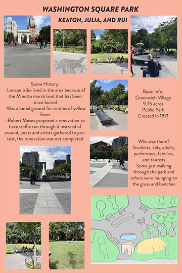
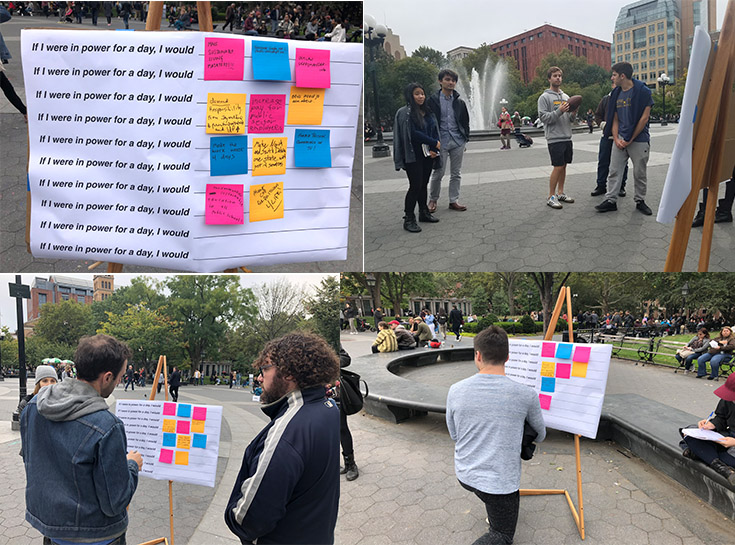
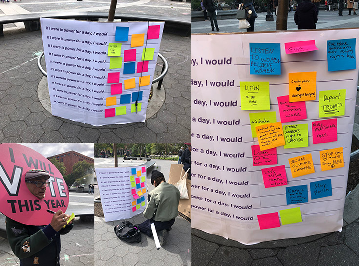

Placed in Washington Square Park, a highly trafficked public space in NYC, "If I Were In Power..."
featured
a board that engaged passersby to anonymously fill in the blank to the question,
“If I were in power
for a day I would _______.”
Responses, ranging from improving the environment to taking corporate money
out of politics,
garnered responses representative of a coastal, American liberal democracy.
Washington Square Park was chosen for this installation because my team members and I knew we wanted a large
open public space
that was not only used as a transit hub but a space where people sat, relaxed and
spent time.
As well as that we wanted a space where there was a large range in the types of people
who went there and we found that Washington Square Park met all of those requirements.

Iteration 1
In the first iteration of this work a 24x36 board was constructed and placed on an easel.
We took this trial as a way to test not only our idea but a way to test how the placement of our
piece
was related to the amount of interaction it received.
For this run I was responsible for the facilitation
of interactions,
I was tasked to be the “face” of our project by directly asking the park goers if they
wanted to contribute an idea to the board.

Iteration 2
Taking what we learned in the first trial we moved onto the second iteration.
We were
able to pinpoint a location quickly and set up.
We decided to create a larger board to provide more
space for public the write their ideas.
Instead of having someone as the intermediary between the project
and the public we left
a sharpie tied to the board and walked away leaving the board in the park on
its own.
Although this left us with some fears about it blowing away and people stealing it/parts of
it
we felt that not having someone watching you as you wrote may spark more of a willingness to write.

After the completion of "If I Were In Power..." I have gained an immense amount of knowledge about public
art
and how art in a communal space becomes less and less about what the maker thought it would be and
more about what the community makes of it. Through the first and second iterations of this work
I
saw how anonymity played a huge factor in willingness to participate and when I was able to step away
from
the work and leave the physical piece on its own the public flocked to it and created an artwork of their
own.